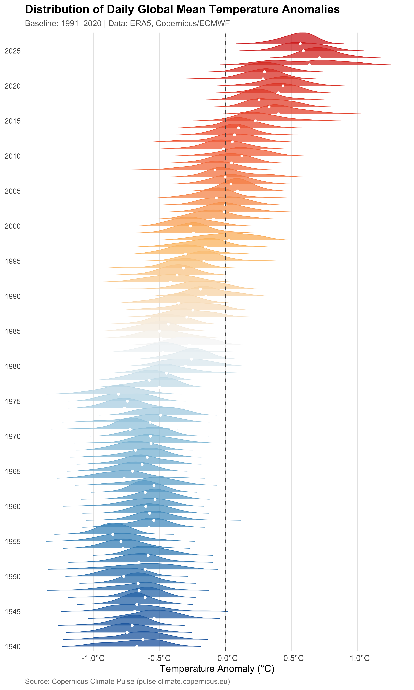
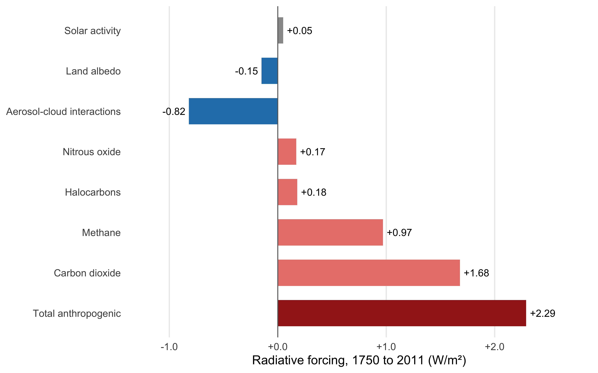
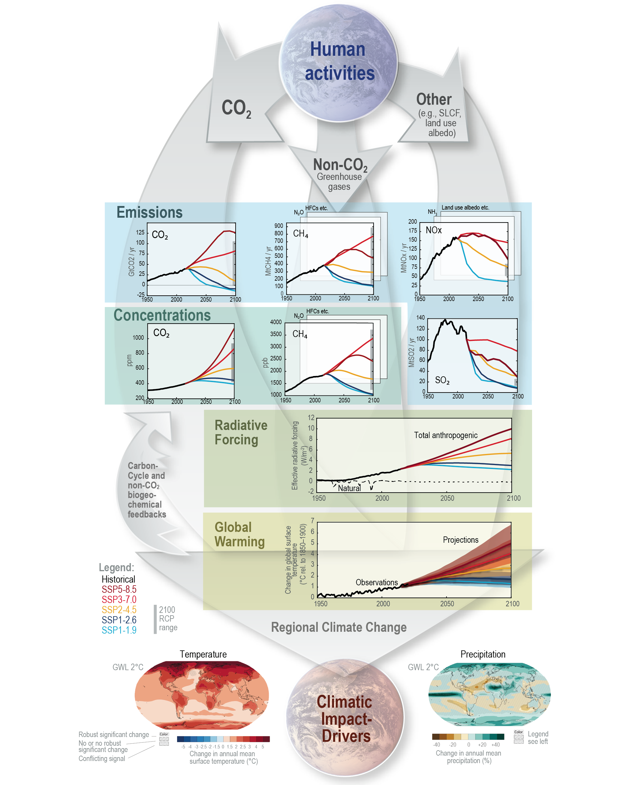
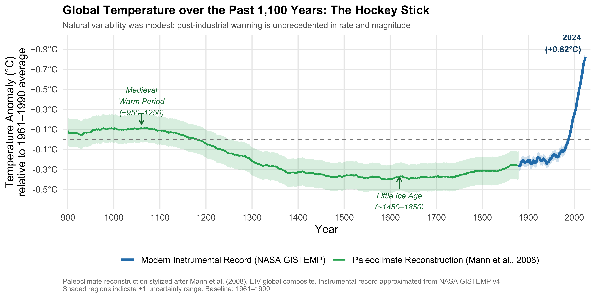
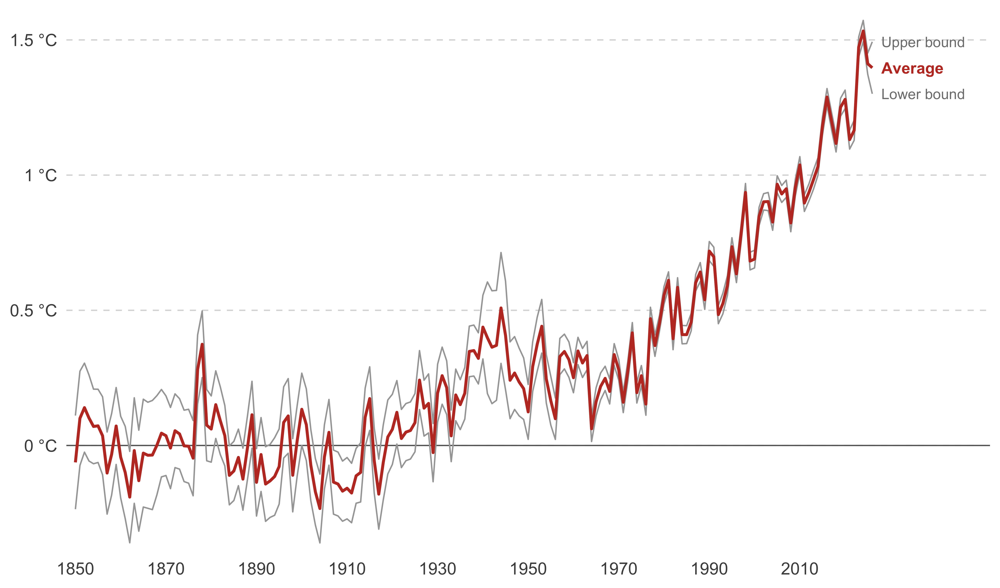
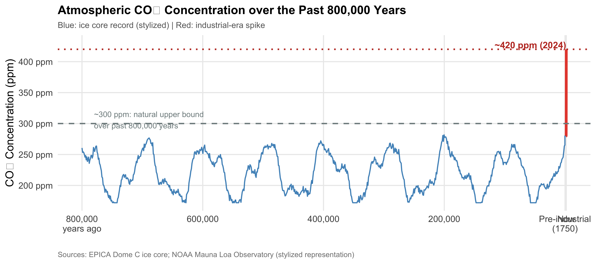
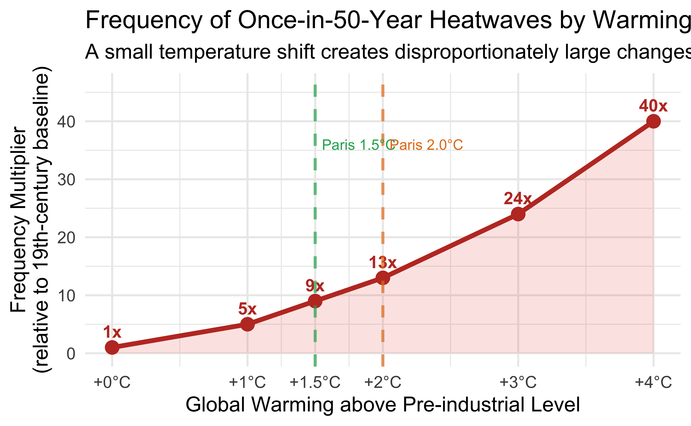
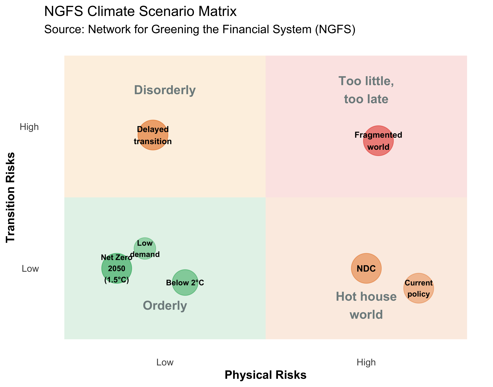

기후변화란 무엇인가
기후란 무엇인가: 실현값 대 분포
날씨와 기후의 구분
기후변화를 이해하는 첫걸음은 날씨(weather)와 기후(climate)를 엄격히 구분하는 것이다. 통계학적으로 이는 ’확률변수(random variable)의 실현값(realization)’과 ’그 확률변수가 따르는 확률 분포(probability distribution)’의 차이에 정확히 대응한다. 확률변수란 무작위 실험(random experiment)의 결과 하나하나에 숫자를 대응시키는 함수다. 동전을 던져 앞면이면 1, 뒷면이면 0을 대응시키듯이, 특정 날짜·장소의 대기 상태에 ’기온’이라는 숫자를 대응시킨 것이 바로 기온이라는 확률변수다. 날씨는 이 확률변수가 오늘 당장 취한 단일 실현값이다. “오늘 서울의 기온이 \(30\,^\circ\text{C}\)인가?” 혹은 “내일 비가 오는가?”와 같은 질문이 날씨에 해당한다. 반면 기후는 장기간(통상 30년 이상)에 걸쳐 이 확률변수가 반복적으로 실현되며 그려내는 통계적 요약, 즉 기온·강수량·습도 등 기상 변수들이 따르는 확률 분포 그 자체를 의미한다 (Wichman 2024). 확률 분포란 확률변수가 취할 수 있는 값들 각각에—또는 어떤 값의 구간에—얼마의 확률이 배분되는지를 나타내는 함수로, 어떤 값 근처에 관측치가 몰리기 쉬운지, 어디까지 흩어질 수 있는지를 통째로 요약해 보여준다.
이 구분이 중요한 이유는 하나의 실현값으로 그 배후의 확률분포 전체를 반박할 수 없기 때문이다. 동전을 한 번 던져 앞면이 나왔다고 해서 그 동전이 앞면만 나오는 동전이라고 결론지을 수 없듯이, “올겨울이 유난히 추운데 지구온난화가 맞느냐”는 질문은 표본크기 1에 불과한 단일 관측값으로 수십 년간 누적된 분포를 부정하는 논리적 오류다.
기후: 결합 확률 분포로서의 이해
기후를 온전히 이해하려면 평균 기온이라는 숫자 하나만 봐서는 안 된다. 한 사람의 건강을 체중 하나로 판단할 수 없는 것과 마찬가지다. 키, 혈압, 콜레스테롤 수치가 서로 얽혀 있어야 비로소 온전한 그림이 나오듯, 기후 역시 기온·강수량·습도·바람 같은 여러 변수가 동시에 어떤 조합으로 나타나는지를 함께 봐야 한다. 이렇게 여러 확률변수가 동시에 어떤 값을 취할지를 나타내는 것이 결합 확률 분포(joint probability distribution)이며, 그중 기온 하나만 따로 떼어 살펴본 분포를 주변 분포(marginal distribution)라 부른다. 평균 기온이라는 숫자는 이 결합분포에서 다른 모든 정보를 지우고 기온이라는 한 단면만 남긴 요약본에 지나지 않는다.
이 결합분포가 중요한 이유는 변수들이 따로따로 움직이지 않고 함께 움직이기 때문이다. 폭염과 가뭄은 서로 무관하게 각자 발생하는 별개의 사건이 아니라, ’뜨겁고 건조한 날씨’라는 하나의 패턴 속에서 함께 찾아오는 경우가 많다. 이렇게 두 변수가 같은 방향으로 함께 움직이는 경향을 공분산(covariance)이라 부르는데, 농부의 입장에서는 ’더운 여름’과 ’가문 여름’이 각각 따로따로 찾아오는 것과, 둘이 늘 함께 찾아오는 것은 완전히 다른 위험이다. 후자라면 최악의 조합—뜨겁고 동시에 건조한 여름—이 훨씬 자주 실현되기 때문이다. 기후가 대기뿐 아니라 해양, 빙하, 지표면 생물권까지 아우르는 복합 시스템이라는 것도 같은 맥락이다. 이 하위 시스템들이 서로 얽혀 함께 움직이는 방식 자체가 결합분포의 일부를 이룬다.
나아가 이 분포의 생김새 자체도 중요한 정보를 담고 있다. 평균은 분포의 무게중심이고, 분산은 그 무게중심 주위로 값들이 얼마나 넓게 흩어져 있는지를 말해준다. 그런데 평균과 분산이 똑같은 두 분포라도 생김새는 전혀 다를 수 있다. 한쪽으로 길게 늘어진 꼬리를 가진 분포—왜도(skewness)가 있는 분포—는 대부분의 날은 평범하지만 이따금 유난히 한쪽으로 치우친 값이 튀어나오는 패턴을 보인다. 그리고 분포의 가장 바깥쪽 가장자리, 즉 평균에서 한참 벗어난 자리에서 일어나는 사건이 얼마나 자주 일어나는지를 나타내는 것이 꼬리 위험(tail risk)이다. 보험사가 ’100년에 한 번 올 폭염’을 걱정하고, 댐과 제방을 설계할 때 평균 강수량이 아니라 극단적인 홍수 시나리오를 기준으로 삼는 이유가 여기에 있다. 평균은 평범한 하루를 설명하지만, 삶과 자산을 실제로 위협하는 것은 대개 이 꼬리에서 벌어지는 일이기 때문이다.
경제 주체들은 바로 이 결합분포 전체—중심의 위치(평균), 퍼짐의 정도(분산), 비대칭성(왜도), 변수들이 함께 움직이는 방식(공분산), 그리고 극단적 사건이 일어날 가능성(꼬리 위험)—를 바탕으로 농작물을 선택하고, 인프라를 설계하며, 보험 상품의 가격을 결정한다.
기후변화: 분포의 전이
이항분포가 시행 횟수와 성공 확률이라는 두 모수로, 포아송분포가 발생률이라는 하나의 모수로 완전히 규정되듯이, 임의의 확률분포는 소수의 모수(parameter)로 요약된다. 기후변화에서 ’변화’란 단순히 날씨가 달라지는 것이 아니라, 기후라는 확률분포를 규정하는 모수가 통계적으로 유의미하게 변하는 것이다. 이 변화는 크게 두 차원에서 나타난다. 첫째, 평균의 이동(shift in mean)으로, 분포 전체가 오른쪽으로 이동하며 평균 기온이 상승한다. 과거에는 분포의 꼬리 쪽에 위치해 드물게만 실현되던 ’극심한 폭염’이, 분포 자체가 이동하면서 중심부 가까이로 옮겨와 일상화되는 것이다. 둘째, 분산의 변화(shift in variance)로, 분포가 더 넓고 평평해지며 기후의 변동성이 커져 가뭄과 홍수가 더 빈번하고 극단적으로 나타난다. 여기에 더해 분포가 한쪽으로 기우는 왜도의 변화까지 관측되는데, 이는 평균과 분산만으로는 포착되지 않는 비대칭적 리스크—가령 저온 쪽보다 고온 쪽 극단이 더 두터워지는 현상—를 드러낸다.
경제학적으로 가장 중요한 함의는, 매년의 날씨를 마치 동일한 확률분포에서 반복적으로 뽑아낸 독립적 표본처럼 취급해 온 정상성(stationarity) 가정—전통적 계량경제 모형이 암묵적으로 의존해온 전제—이 더 이상 성립하지 않는다는 점이다. 반복되는 실험, 즉 해마다의 기후가 더 이상 동일한 모집단 분포에서 나오지 않으므로, 과거 데이터로 추정한 통계량은 미래를 예측하는 근거로서의 힘을 잃는다. 기후라는 공공재의 질적 하락이며, 리스크의 총량 자체가 변화한다.
실증: 연도별 기온 이상 분포의 변화
위의 개념을 직접 확인할 수 있는 시각화가 Figure 2.1 다. ERA5 재분석 데이터를 이용하여 1940년부터 현재까지 각 연도의 365개 일별 기온 이상값(1991–2020년 기준)의 확률 분포를 ridge plot으로 나타냈다. 그림에서 분포의 평균이 오른쪽으로 이동하는 것(온난화)과, 분포의 형태 자체가 변화하는 것이 모두 나타난다. 이것이 바로 날씨가 아닌 기후의 변화다.
온실효과와 탄소 순환
지구의 에너지 수지와 복사강제력
기후변화가 왜, 어떤 경로로 일어나는지를 이해하려면 하나의 단순한 조건에서 출발해야 한다. 지구의 평균 기온은 들어오는 에너지와 나가는 에너지가 같아지는 지점에서 결정된다. 태양은 주로 단파 복사(가시광선·자외선)를 방출하고, 지구는 이를 흡수했다가 자신의 온도에 맞춰 장파 복사(적외선)로 재방출한다. 이 유입과 유출이 균형을 이룰 때 지구의 평균 기온은 안정적으로 유지된다.
이제 이 균형에 무언가 끼어들어 유출을 방해한다고 가정하자. 유출이 줄어들면 유입이 유출을 초과하는 순간적인 에너지 불균형이 발생한다. 이 불균형의 크기를 복사강제력(radiative forcing, \(F\))이라 부르며, 단위는 W/m²다. \(F>0\)이면 지구-대기 시스템에 에너지가 순유입되어 온난화 압력으로 작용하고, 지구는 이 불균형을 해소하기 위해 스스로 데워지며 더 많은 적외선을 방출해 더 높은 온도에서 새로운 균형에 도달한다. 아래에서 살펴볼 온실효과, 탄소 순환의 교란, 그리고 기체별 복사강제력은 모두 이 하나의 인과 사슬—에너지 균형의 교란과 재조정—을 구체화한 것이다.
온실효과의 메커니즘
온실효과의 물리학은 오래전부터 매우 잘 이해되어 왔다. 온실기체(\(\text{CO}_2\), \(\text{CH}_4\), \(\text{N}_2\text{O}\) 등)는 마치 담요처럼 태양의 단파 복사는 잘 통과시키지만, 지구가 방출하는 적외선(장파 복사)은 흡수했다가 사방으로 재방출하는 성질이 있다. 재방출된 적외선의 일부가 다시 지표를 향하면서, 앞서 정의한 유출이 방해받는 상황이 정확히 실현된다. 그 결과 에너지가 대기권 밖으로 빠져나가지 못하고 지구-대기 시스템 내에 축적되며, 대기 중 온실기체가 증가할수록 이 담요는 두꺼워져 복사강제력이 커진다. 만약 온실기체가 전혀 없다면 지구의 평균 표면 온도는 약 \(-18\,^\circ\text{C}\)에 불과할 것이다. 실제로 지구가 생명 유지에 적합한 약 \(+15\,^\circ\text{C}\)를 유지하는 것은 자연적 온실효과 덕분이다 (Hsiang and Kopp 2018).
탄소 순환
그렇다면 이 인위적 강제력은 어디에서 비롯되는가? 대기 중 탄소는 대기, 해양, 육지 생태계 사이를 끊임없이 순환한다. 산업화 이전에는 이 순환이 대체로 균형 상태—배출과 흡수가 거의 상쇄되는 상태—에 있었다. 문제는 인류가 수억 년에 걸쳐 지하에 저장된 화석연료(석탄, 석유, 천연가스)를 연소시키면서 탄소가 대기로 일방적으로 방출되기 시작한 데 있다. 화석연료 연소로 발생하는 \(\text{CO}_2\) 배출량은 자연적 배출량에 비해 절대량으로는 작다. 그러나 자연 순환에서는 배출과 흡수가 거의 상쇄되는 반면, 화석연료 연소에 의한 배출은 이를 상쇄할 자연적 흡수 경로가 없다 (Tol 2023).
| 구분 | 규모 (GtC/yr) |
|---|---|
| 화석연료 연소 | \(+7.8\) |
| 토지이용 변화 | \(+1.1\) |
| 육상 생태계 순흡수 | \(-2.6\) |
| 해양 순흡수 | \(-2.3\) |
| 대기 중 순증가 | \(\approx +4.0\) |
결과적으로 대기 중 \(\text{CO}_2\) 농도가 산업화 이전 약 280 ppm에서 2019년 약 410 ppm(약 47% 증가)으로 상승했으며, 이는 지난 200만 년 중 가장 높은 수준이다.
기체별 복사강제력 기여도
탄소 순환의 교란이 만들어내는 에너지 불균형은 실제로 얼마나 큰가? IPCC는 각 온실기체와 에어로졸이 1750년 대비 2011년 시점에 기여한 복사강제력을 정량적으로 추정한다(Figure 2.2). \(\text{CO}_2\) 하나만으로 \(1.68\) W/m²에 달하며, 메탄·할로카본·아산화질소를 더한 온실기체 전체는 모두 양(+)의 강제력을 나타낸다. 반면 에어로졸·구름 상호작용과 토지이용에 따른 지표 알베도 변화는 음(-)의 강제력, 즉 냉각 효과를 낸다. 태양 활동의 기여는 \(0.05\) W/m²에 불과해 무시할 만한 수준이다. 이 모든 항을 합산한 총 인위적 복사강제력은 2011년 기준 약 \(2.29\) W/m²로, 이것이 바로 앞서 정의한 그 에너지 불균형의 실제 크기다.

주요 온실기체와 지구온난화지수
\(\text{CO}_2\)는 인위적 온실기체 배출의 약 72%를 차지하는 가장 중요한 기체다. 한 가지 중요한 특성은 \(\text{CO}_2\)가 대기에 매우 오랫동안 남아 있다는 것이다. 오늘 배출한 \(\text{CO}_2\) 1톤 중 약 20%는 1,000년 후에도 대기에 남아 있어 기후 시스템에 강한 관성(inertia)을 부여한다 (Tol 2023). 메탄(\(\text{CH}_4\))은 대기 체류 기간이 약 12년으로 짧지만, 단위 질량당 열 흡수 능력이 \(\text{CO}_2\)보다 훨씬 강하다. 온실기체들을 비교하기 위해 지구온난화지수(Global Warming Potential, GWP)가 사용된다. 이는 기체 1톤이 100년 동안 창출하는 온난화 효과를 \(\text{CO}_2\) 1톤 대비 상대적으로 표현한 것이다.
| 온실기체 | 대기 체류 기간(년) | GWP100 (\(\text{CO}_2\) = 1) |
|---|---|---|
| 이산화탄소 (\(\text{CO}_2\)) | 50–200 | 1 |
| 메탄 (\(\text{CH}_4\)) | 12 | 21 |
| 아산화질소 (\(\text{N}_2\text{O}\)) | 120 | 310 |
| CFC-12 | 100 | 10,600 |
| CFC-11 | 45 | 4,600 |
| HFC-134a | 14.6 | 1,300 |
| 육불화황 (\(\text{SF}_6\)) | 3,200 | 23,900 |
수증기(\(\text{H}_2\text{O}\))는 양적으로 가장 중요한 온실기체이나, 대기 중 농도가 인간 활동에 의해 직접 좌우되지 않아 기후변화 분석에서는 피드백 변수로 다룬다.
인류세와 인간 활동의 역할
인간 활동은 지구의 지질, 경관, 생태계, 기후에 심오한 영향을 미쳐왔다. 지질학자들은 이를 인류세(Anthropocene)라는 개념으로 포착한다. ’인류세’는 anthropo(인간)와 cene(새로운)의 합성어로, 현재를 인간이 지구 시스템의 주요 변인이 된 새로운 지질 시대로 규정하는 개념이다. 인류세는 식물과 동물 종의 대량 멸종, 해양 오염, 대기 변화 등 인간 활동이 남긴 돌이킬 수 없는 흔적들을 포괄한다. 화석연료의 에너지 생산·교통·산업 과정에서의 연소가 인위적 온실기체 배출의 가장 큰 원인이며, \(\text{CO}_2\)가 인간 기원 온실기체 배출의 약 3/4를 차지한다. 산림 벌채와 토지 이용 변화도 삼림과 토양에 저장된 탄소를 대기로 방출하여 온난화를 가속한다.
한눈에 보는 인과 사슬: IPCC 공식 흐름도
지금까지 이 절에서 다룬 여섯 단계—에너지 수지, 온실효과, 탄소 순환의 교란, 기체별 복사강제력, 에너지 불균형—는 IPCC의 공식 인과 흐름도 한 장에 그대로 압축되어 있다(Figure 2.3). 이 그림은 인간 활동에서 출발해 배출(Emissions)과 대기 중 농도(Concentrations)로 이어지고, 이것이 다시 복사강제력(Radiative Forcing)을 거쳐 전 지구 온난화(Global Warming)로, 그리고 최종적으로 지역별 기후변화와 기후영향인자(Regional Climate Change, Climatic Impact-Drivers)로 파급되는 전 과정을 하나의 순서도로 보여준다. 왼쪽의 되먹임 화살표(Carbon-Cycle and non-\(\text{CO}_2\) biogeochemical feedbacks)는 온난화가 다시 탄소 순환에 영향을 미치는 되먹임 고리를 나타내며, 색깔로 구분된 선들은 5개의 핵심 공유사회경제경로(SSP1-1.9~SSP5-8.5) 시나리오에 따른 분기를 보여준다. 복사강제력 패널의 검은 실선(관측)이 우리가 앞서 살펴본 2011년 기준 약 2.29 W/m² 근방에서 시나리오별로 갈라지는 지점에 주목하라—이는 지금까지의 논의와 정확히 대응한다.

기후변화의 관측 증거
기온 상승과 극단 기상의 증가
IPCC 제6차 평가보고서(AR6)는 “인간의 영향이 대기, 해양, 육지를 가열시켰다는 것은 명백하다(unequivocal)”고 선언한다. 이는 역대 IPCC 보고서 중 인간 영향에 관한 가장 강력한 표현이다. 현재 지구 평균 표면 온도는 산업화 이전(1850~1900년) 대비 약 \(1.1\,^\circ\text{C}\) 상승했으며, \(\text{CO}_2\)와 시멘트 생산에서의 화석연료 배출이 이 상승의 약 0.67°C를 설명한다 (Quilcaille et al., 2025). 이 온난화 속도는 지난 2,000년간 전례 없는 것으로, 자연적 요인(태양 활동, 화산 폭발)만으로는 설명할 수 없다. 온난화의 공간 패턴도 뚜렷하다. 온난화는 해양보다 육지에서, 저위도보다 고위도(북극)에서, 여름보다 겨울에, 낮보다 밤에 더 크게 나타난다.
관측된 기후변화 1.1°C는 이미 지구 육지 면적과 강 홍수, 작물 실패, 열대성 폭풍, 산불, 가뭄, 폭염에 연간 노출되는 전 세계 인구를 두 배 이상 증가시킨 것으로 추정된다 (Lange et al., 2020). 단 하나의 극단 기상 현상(허리케인, 홍수, 산불)을 기후변화 탓으로 단정하기는 어렵지만, 기후변화가 이러한 파괴적 기상 현상의 빈도와 강도를 높인다는 것은 과학적으로 확립되어 있다.
출처: NASA Earth Observatory, “Global Warming” (updated Nov. 2025): science.nasa.gov/earth/climate-change/global-warming

하키스틱 그래프의 근대 구간(파란선)은 스타일화된 근사치였다. 이를 실제 관측 기록으로도 확인할 수 있다. Figure 2.5 는 Met Office Hadley Centre의 HadCRUT5 자료를 이용해 1850년 이후 전 지구 평균 기온 이상을 불확실성 구간과 함께 그린 것이다. 연도별 변동(회색 밴드)에도 불구하고 평균(붉은선)은 1970년대 이후 뚜렷한 상승 추세를 보인다.


기타 관측 변화
기온 상승 외에도 다양한 기후 변수에서 일관된 변화가 관측된다. 해수면 상승은 두 가지 메커니즘이 함께 작용한 결과다. 첫째는 열팽창(thermal expansion)으로, 해수가 데워지면 부피가 늘어나는데 해양의 평균 수심이 약 3 km에 달해 아주 작은 팽창률도 누적되면 상당한 상승폭을 만든다. 둘째는 육지에 있던 빙하·빙상이 녹아 바다로 유입되며 해수 총량 자체가 늘어나는 것이다. 이 두 경로를 통해 해수면은 지난 세기 동안 약 20 cm가 상승했으며 이는 지난 2,000년 중 가장 빠른 속도다. 21세기 말까지의 해수면 상승 전망은 시나리오에 따라 \(0.3\)~\(1.0\) m에 달한다.
폭풍의 패턴도 달라지고 있다. 온대저기압(extratropical storms)은 빈도보다 강도가 커질 가능성이 높은 것으로 평가되며, 열대저기압(tropical storms, 태풍·허리케인)은 발생 빈도나 활동 면적이 크게 달라지지 않을 것으로 보이는 반면 최대풍속·강수량 등 강도는 증가할 전망이다.
해양 산성화는 온난화를 거치지 않는 별도의 경로로 진행된다. 대기 중 \(\text{CO}_2\)가 증가하면 해양이 더 많은 \(\text{CO}_2\)를 흡수하고, 이는 \(\text{CO}_2 + \text{H}_2\text{O} \rightarrow \text{H}_2\text{CO}_3\)(탄산) 형성으로 이어져 수소이온(\(\text{H}^+\)) 농도를 높이고 pH를 낮춘다. 이렇게 산성화된 바닷물은 산호·패각류·익족류 등 석회질 골격이나 껍질을 가진 생물에 직접적 피해를 초래한다.
빙하 후퇴도 전례 없는 속도로 진행 중이다. 1950년대 이후 세계 대부분의 빙하가 유례없는 속도로 후퇴하고 있으며, 그린란드 빙상의 융해는 1990년대 이후 크게 가속되었다.
비가역성과 티핑 포인트
비가역성의 개념
최근 연구들은 일부 지역에서 기후변화가 비가역적(irreversible)으로 나타날 수 있음을 보여준다. 이는 배출이 제거된 후에도 그 영향이 일부 지역에서 지속될 수 있음을 의미한다 (Kim et al., 2022). 대기 변수에서의 광범위한 비가역적 변화는 산악 빙하, 해빙, 열대우림 등 지구 시스템의 다른 구성 요소에서도 비가역적 변화를 유발할 수 있다. 이러한 비가역성 핫스팟은 주로 남극, 그린란드, 알래스카, 히말라야 고산 빙하 지역, 아프리카와 남미의 몬순 지역 등 얼음으로 덮인 해안 지역에서 확인된다.
기후 티핑 포인트
기후 티핑 포인트(climate tipping points)란 작은 기후 변화에 대한 극단적 사건의 비선형적 반응을 지칭한다. 티핑 포인트에 도달하면, 작은 변화가 갑작스럽고 비가역적이며 연쇄적 효과를 유발할 만큼 중요한 더 큰 변화를 초래하기에 충분할 정도로 유의미해진다. 파리 협정의 온난화 목표를 초과하면 티핑 포인트에 도달하고 영구 동토층 해빙이나 아마존 열대우림 소멸과 같은 비가역적 변화를 촉발할 위험이 증가한다. 아마존 열대우림이 티핑 포인트를 촉발한다면, 1.5°C 목표로 되돌아가는 것은 훨씬 더 어렵거나 불가능해질 것이다.
특히 그린란드 빙상은 해수면을 6미터 이상 상승시킬 충분한 물을 담고 있으며, 그 융해는 1990년대 이후 크게 가속되어 수천 년 동안 돌이킬 수 없는 최종 붕괴로 이어질 임계 지점에 도달할 수 있다. 또한 지구 시스템에는 행성적 임계값(planetary threshold)이 존재할 수 있다는 연구도 있다. 이를 넘으면 중간 온도 상승 범위에서 안정화가 불가능해질 수 있다. 현재 지구는 지난 120만 년의 간빙기 조건의 상한에 가까워지고 있으며, Steffen et al.(2018)은 비선형적 피드백 과정이 지구 시스템의 미래 궤도를 결정하는 지배적 요인이 될 수 있다고 경고한다.
극단 기상의 빈도 변화: 온도별 비교
기후 평균의 작은 변화는 극단 기상의 빈도와 심각성에 불균형적으로 큰 변화를 초래한다. 19세기에 50년에 한 번 발생하던 폭염은 현재 +1°C 온난화로 5배 더 자주 발생한다. +1.5°C 시나리오에서는 50년 주기 폭염이 9배 더 빈번해져 약 5년에 한 번으로 일상화된다. 그리고 +4°C 온난화 시나리오에서는 그 빈도가 40배로 증가하여 50년 주기 폭염이 사실상 매년 발생하게 된다 (IPCC AR6). 이처럼 작은 온도 변화가 극단 기상의 확률을 기하급수적으로 변화시키는 비선형성은 기후 위험 평가에서 매우 중요한 시사점을 갖는다.

미래 전망: 시나리오와 예측
시나리오란 무엇인가
기후 전망은 조건부 예측(conditional prediction)이다. 시나리오는 확률적 예측이 아니라, 미래 조건을 현재와 연결하는 인과적 이야기 구조를 갖는 내적으로 일관된 가능한 미래의 서술이다 (Foster, 1993; Glenn, 2009). 기후 시나리오는 크게 두 축으로 구성된다. 하나는 미래 사회경제 시스템의 진화 경로이고, 다른 하나는 그 경로에서 발생할 \(\text{CO}_2\) 및 온실기체 농도의 변화다. 이 두 구성 요소를 결합하여 기후과학자와 경제학자들은 가능한 기후 미래와 그에 대응하는 위험 및 기회를 탐구한다. 미래 온난화는 이 시나리오에 따라 2100년까지 1.5°C에서 거의 5°C에 이르는 넓은 범위에 걸친다 (IPCC AR6).
IPCC 시나리오: RCP와 SSP
IPCC는 두 가지 시나리오 체계를 사용한다. 대표농도경로(Representative Concentration Pathways, RCP)는 IPCC AR5에서 사용된 체계로, 2100년까지 도달하는 복사 강제력 수준(단위: W/m²)으로 분류된다. RCP8.5는 높은 온실기체 농도와 지속적으로 증가하는 복사 강제력을, RCP2.6은 배출 정점 후 감소를 나타낸다. 공유사회경제경로(Shared Socioeconomic Pathways, SSP)는 IPCC AR6에서 도입된 체계로, 사회경제적 발전 경로와 기후 정책 수준을 결합한다. 다섯 가지 SSP 시나리오는 각각 서로 다른 사회경제적 미래를 묘사한다.
SSP1(낮은 적응·완화 도전)은 강력한 국제 협력과 지속가능발전을 우선시하는 세계를 묘사한다. SSP2(중간 도전)는 현재의 추세가 지속되는 세계를 나타낸다. SSP3(높은 적응·완화 도전)은 국가 간 경쟁과 느린 경제 성장, 환경에 대한 낮은 관심으로 특징지어지는 분절된 세계를 묘사한다. SSP4(높은 적응 도전, 낮은 완화 도전)는 소수가 대부분의 온실기체 배출에 책임을 지는 극심한 불평등이 특징이다. SSP5(낮은 적응 도전, 높은 완화 도전)는 전통적이고 급격한 개발에 초점을 맞춰 높은 에너지 소비와 탄소 배출 기술을 기반으로 하는 세계를 설명한다. 이 시나리오들은 다양한 정책 선택과 개입이 기후와 경제에 미치는 영향을 평가하는 핵심 도구다.
균형기후민감도(ECS)
균형기후민감도(Equilibrium Climate Sensitivity, ECS)는 대기 중 \(\text{CO}_2\) 농도가 두 배가 됐을 때 새로운 에너지 균형에서의 지구 평균 기온 상승폭이다. IPCC AR6는 ECS의 최적 추정값을 \(3.0\,^\circ\text{C}\), likely 범위를 \(2.5\)~\(4.0\,^\circ\text{C}\)로 제시한다. 이 불확실성은 구름의 피드백 반응에 주로 기인한다. 특정 지역에서 더 따뜻한 기후에 대한 구름의 전반적인 반응은 아직 불분명하며, 구름의 유형과 고도에 따라 온실효과를 강화할 수도 약화할 수도 있다.
시간 지연 문제
\(\text{CO}_2\)와 온난화 사이에는 시간 지연(time lag)이 존재한다. 오늘 배출된 \(\text{CO}_2\)의 온난화 효과가 완전히 실현되기까지 수십 년이 걸린다. 또한 \(\text{CO}_2\)는 대기에서 매우 천천히 분해되어 오늘 배출한 \(\text{CO}_2\)의 약 70%는 100년 후에도 대기에 남아 있다 (Wichman 2024). 이 특성이 기후 문제를 경제학적으로 독특하게 만드는 핵심 요인 중 하나다. 현재 세대가 비용을 부담하지만 편익은 미래 세대가 누리는 구조이기 때문이다.
NGFS 시나리오: 금융과 거시경제를 위한 틀
IPCC 시나리오가 기후-물리 변수에 초점을 맞춘다면, 녹색금융시스템네트워크(Network for Greening the Financial System, NGFS)는 중앙은행과 감독기관들의 국제 연합체로서 경제·금융 변수(GDP, 인플레이션, 자산 가격 등)에 대한 기후 위험의 영향을 평가하기 위한 별도의 시나리오 체계를 개발하였다.
NGFS 시나리오는 전환 위험(transition risk)과 물리적 위험(physical risk)이라는 두 축으로 구성된 4개 범주로 정리된다. 질서정연한 전환(Orderly) 시나리오에서는 즉각적인 정책 도입으로 점진적 전환이 이루어지며, 전환 위험과 물리적 위험 모두 낮게 유지된다. 무질서한 전환(Disorderly) 시나리오에서는 갑작스럽고 예측 불가능한 정책 변화로 기업과 가계가 급격한 적응을 요구받아 경제적 혼란이 발생한다. 온실 세계(Hot house world) 시나리오는 ’현재 정책 유지’에 해당하며, 정부가 추가적인 전환 조치를 취하지 않아 온실가스 배출이 과거 추세대로 지속되고 기온이 2°C를 넘어 더욱 상승한다. 너무 적게, 너무 늦게(Too little, too late) 시나리오는 완화 행동이 온도 목표를 달성하기에 불충분하여 물리적 위험의 현실화가 무질서한 전환으로 이어지는 경우다.

NGFS 시나리오가 기후 경제학에서 갖는 핵심 함의는 시나리오 분석의 필요성이다. 기후 위험은 전통적인 리스크 평가 방법으로는 다루기 어렵다. 기후 위험은 수십 년 이상의 장기 시계에 걸쳐 전개되고, 정책 경로와 사회경제적 요인에 따라 불확실성이 크며, 지역과 산업에 걸쳐 복잡하게 나타난다. 따라서 시나리오 분석은 중앙은행, 감독기관, 금융 기관, 기업, 정책 입안자들이 기후 역학의 영향을 더 깊이 이해하기 위한 필수적인 도구로 자리 잡고 있다.
기후 관련 재해의 역사적 추세
기후 위험을 이해하는 데 있어 역사적 재해 데이터는 중요한 출발점을 제공한다. 국제재해데이터베이스(EM-DAT)는 전 세계적으로 자유롭게 이용 가능한 유일한 재해 손실 데이터베이스다. 데이터의 한계에도 불구하고 EM-DAT는 재해 발생과 영향을 이해하는 데 없어서는 안 될 도구다. 1980년 이후 홍수와 폭풍이 재해의 더 큰 비중을 차지하며, 그 빈도는 지난 40년에 걸쳐 명확하게 증가해 사건 수가 1980년 이래 3~4배로 늘었다.
손실 측면에서는 재보험사들이 매년 전 세계 비용을 평가한다. 세계 최대의 재보험사인 뮌헨 리(Munich Re)는 2023년 전 세계 재해 손실을 총 2,500억 달러로 발표했는데, 이는 뉴질랜드나 포르투갈의 전체 GDP와 맞먹는 규모다. 스위스 리(Swiss Re)의 추산에서도 2023년 자연 재해는 2,800억 달러의 경제적 손실과 332건의 재해, 76,000명의 사망자를 초래했다. 그 중 1,080억 달러가 보험 처리되었다. 이러한 손실의 대부분은 기상 관련이며, 지난 50년에 걸쳐 뚜렷한 상승 추세를 보인다.
그러나 이 수치들은 재해의 실제 규모를 부분적으로만 포착한다. 사망자, 경제적 피해, 개발 및 사회적 결과를 모두 포함한 재해의 실제 규모는 이보다 훨씬 크다. 공급망 붕괴, 생산성 저하, 신체적·정신적 건강 저하, 교육 중단이라는 점진적이고 국지적인 영향을 포함하면, 재해의 보이지 않는 비용은 보험사들이 제공하는 경제적 추정치를 훨씬 상회한다.
경제학은 왜 기후변화에 관심을 갖는가
이 절은 이후 장들을 위한 교량이다. 기후변화는 단순한 자연과학 문제가 아니라 경제학의 핵심 문제이며, 그 이유는 다음 네 가지로 요약된다.
첫째, 온실기체 배출은 전형적인 외부성(externality)이다. 화석연료를 태우는 개인이나 기업은 그 비용을 완전히 부담하지 않는다. 기후 피해는 전 지구 모든 사람에게, 수백 년에 걸쳐 분산된다. 시장 가격에 이 비용이 반영되지 않는 한 과다 배출이 지속될 것이다. 이것이 기후변화를 시장실패(market failure)로 규정하는 근거다.
둘째, 기후는 순수 공공재(pure public good)다. 대기는 비배제성(non-excludability)과 비경합성(non-rivalry)을 갖는다. 어느 나라도 다른 나라의 대기 이용을 배제할 수 없으며, 한 나라의 배출 감축 이득은 다른 나라도 누린다. 이 구조가 국제 기후 협약을 어렵게 만드는 무임승차(free-rider) 문제의 근원이다.
셋째, 시간적 차원과 물리적 위험이 핵심이다. 기후 피해는 미래 세대에 집중되는 반면 감축 비용은 현세대가 부담한다. 나아가 기후변화와 극단 기상 현상—우리가 물리적 위험(physical risks)이라고 부르는 것—은 경제 시스템에 여러 경로로 파급된다. 농업 생산 교란은 식품 부족과 인플레이션 압력을 낳고, 허리케인·홍수·산불은 도로·교량·전력선 등 핵심 인프라를 파손하여 공급망을 붕괴시킨다. 해수면 상승은 해안 지역사회와 산업에 위협을 가하고, 기후 관련 재해는 사망, 인구 이동, 의료 비용 증가를 통해 경제 자원을 추가로 압박한다. 그러나 기후 경제학에는 완화와 적응이라는 두 가지 대응 경로가 있으며, 이 중 어느 수준에서 어떤 정책 수단이 가장 비용효과적인가를 결정하는 것이 경제학의 핵심 역할이다.
넷째, 가격 체계 자체가 흔들린다. 보험료, 농산물 선물가격, 부동산 가격은 모두 과거에 관측된 날씨—즉 오래된 실현값들—를 바탕으로 미래의 분포를 추정해 매겨진다. 그런데 1장에서 살펴보았듯 기후변화란 그 분포 자체가 이동하는 현상이므로, 과거 데이터에 근거한 가격은 체계적으로 틀리게 된다. 재해 위험이 과소평가된 보험 상품, 재난 이후의 갑작스러운 보험료 급등, 가치를 잃는 좌초자산(stranded asset)은 모두 이 어긋남이 현실에 나타난 결과다.
요약
이 장에서 다룬 핵심 내용은 다음과 같다. 날씨는 대기 상태의 단기 실현값이고 기후는 그 장기 통계 분포다. 기후변화는 이 분포 자체의 이동 및 형태 변화를 의미하며, 역사적 데이터의 정상성에 기반한 기존 경제 모형의 근본적 수정을 요구한다.
산업화 이후 인간 활동—특히 화석연료 연소와 삼림 벌채—에 의한 온실기체 배출이 탄소 순환을 교란하고 온실효과를 강화하여 현재 약 1.1°C의 지구 평균 기온 상승을 초래했다. 인류세는 인간이 지구 시스템의 주요 변인이 된 시대로, IPCC AR6는 이 온난화에서 인간 영향이 명백하다고 결론짓는다.
비가역성과 티핑 포인트는 기후변화의 중요한 특성이다. 작은 평균 온도 변화가 극단 기상의 빈도와 심각성에 비선형적으로 큰 변화를 초래하며, 특정 임계값을 넘으면 돌이킬 수 없는 변화가 발생할 수 있다.
시나리오는 확률적 예측이 아닌 내적으로 일관된 가능한 미래의 서술이다. IPCC의 SSP/RCP 체계는 물리적 기후 변화를 탐구하는 데, NGFS의 시나리오 체계는 기후 위험의 거시경제·금융 영향을 평가하는 데 사용된다.
기후변화는 외부성, 공공재, 세대 간 형평성이라는 경제학의 핵심 문제를 동시에 내포하며, 물리적 위험을 통해 경제 시스템 전반에 파급 효과를 미친다. 이 때문에 기후변화에 대한 경제학적 분석은 필수적이다.
연습문제
객관식
-
다음 중 기후(climate)에 대한 설명으로 가장 적절한 것은?
- 특정 날짜의 기온과 강수량
- 날씨의 장기 통계적 분포
- 태풍, 홍수 등의 극단적 기상 현상
- 대기 중 온실기체의 농도
-
NGFS 시나리오에서 ‘질서정연한 전환(Orderly)’ 시나리오의 특징으로 옳은 것은?
- 높은 물리적 위험, 낮은 전환 위험
- 낮은 물리적 위험, 높은 전환 위험
- 낮은 물리적 위험, 낮은 전환 위험
- 높은 물리적 위험, 높은 전환 위험
서술형
균형기후민감도(ECS)의 개념을 설명하고, IPCC AR6의 추정 범위를 제시하라. 또한 ECS의 불확실성이 기후 정책 설계에 어떤 함의를 갖는지 논의하라.
기후 티핑 포인트의 개념을 정의하고, 아마존 열대우림과 그린란드 빙상의 사례를 들어 경제·사회적 함의를 서술하라.
기후변화가 경제학의 문제인 이유를 외부성, 공공재, 물리적 위험 전달 경로의 세 측면에서 서술하고, 각각에 대해 적절한 정책 대응 방향을 제시하라.
Climate Brink Dashboard에 접속하여 지구 평균 기온 이상 그래프를 확인하라. 최근 10년의 추세가 그 이전 시기와 어떻게 다른지 서술하고, 이 패턴이 기후변화의 어떤 특성을 보여주는지 논의하라.
온라인 데이터 및 시각화 자료
| 자료 | 운영 기관 | 주요 내용 |
|---|---|---|
| Climate Brink Dashboard | Andrew Dessler (Texas A&M) | 기온·해빙·해수면·CO₂ 등 핵심 지표 대화형 시각화 |
| Copernicus Climate Pulse | C3S / ECMWF (EU) | ERA5 기반 준실시간 기후 모니터링 (일·월·연별) |
| IPCC AR6 | IPCC | 제6차 평가보고서 원문 |
| NGFS Scenarios | NGFS | 중앙은행·감독기관을 위한 기후 시나리오 |
| EM-DAT | CRED/UC Louvain | 국제 재해 데이터베이스 |
| Our World in Data – CO₂ | Our World in Data | 국가별 CO₂ 배출 추세 |
| Global Carbon Budget | Global Carbon Project | 연간 탄소 수지 업데이트 |
| NASA: Global Warming | NASA Earth Observatory | 현재 온난화가 자연적 변동과 어떻게 다른지 심층 해설 |
| XKCD: Earth’s Temperature Timeline | XKCD | 지구 기온 80만 년 타임라인 |
부록: R 코드
이 장의 본문에 등장한 그림을 생성한 R 코드를 정리한다. 각 코드는 해당 그림 번호와 함께 표시되어 있다.
Figure 2.1 코드
library(tidyverse)
library(ggridges)
library(lubridate)
url <- "https://sites.ecmwf.int/data/climatepulse/data/series/era5_daily_series_2t_global.csv"
raw <- read_csv(url, comment = "#", show_col_types = FALSE)
df <- raw |>
rename(anomaly = `ano_91-20`) |>
select(date, anomaly) |>
filter(!is.na(anomaly)) |>
mutate(date = as.Date(date), year = year(date)) |>
filter(year >= 1940)
year_median <- df |>
group_by(year) |>
summarise(med = median(anomaly, na.rm = TRUE), .groups = "drop")
pal_year <- colorRampPalette(
c("#2166AC", "#4393C3", "#92C5DE", "#F7F7F7", "#FDBF6F", "#F46D43", "#D73027")
)(length(unique(df$year)))
names(pal_year) <- as.character(sort(unique(df$year)))
df |>
mutate(year_f = factor(year)) |>
ggplot(aes(x = anomaly, y = year_f,
fill = factor(year), color = factor(year))) +
geom_density_ridges(
scale = 1.8, rel_min_height = 0.005,
bandwidth = 0.07, alpha = 0.75, linewidth = 0.25
) +
geom_point(
data = year_median,
aes(x = med, y = factor(year)),
color = "white", size = 0.8, inherit.aes = FALSE
) +
geom_vline(xintercept = 0, linetype = "dashed",
color = "gray30", linewidth = 0.4) +
scale_fill_manual(values = pal_year, guide = "none") +
scale_color_manual(values = pal_year, guide = "none") +
scale_x_continuous(
breaks = seq(-1.0, 1.5, by = 0.5),
labels = \(x) sprintf("%+.1f°C", x),
expand = c(0.01, 0)
) +
scale_y_discrete(breaks = as.character(seq(1940, 2025, by = 5))) +
labs(
title = "Distribution of Daily Global Mean Temperature Anomalies",
subtitle = "Baseline: 1991–2020 | Data: ERA5, Copernicus/ECMWF",
x = "Temperature Anomaly (°C)",
y = NULL,
caption = "Source: Copernicus Climate Pulse (pulse.climate.copernicus.eu)"
) +
theme_minimal(base_size = 10) +
theme(
plot.title = element_text(face = "bold", size = 12),
plot.subtitle = element_text(size = 8.5, color = "gray40"),
plot.caption = element_text(size = 7.5, color = "gray50", hjust = 0),
axis.text.y = element_text(size = 7.5),
axis.text.x = element_text(size = 8.5),
panel.grid.major.y = element_blank(),
panel.grid.major.x = element_line(color = "gray90", linewidth = 0.35),
panel.grid.minor = element_blank(),
plot.background = element_rect(fill = "white", color = NA)
)Figure 2.2 코드
library(ggplot2)
library(forcats)
df_rf <- data.frame(
driver = c("Solar activity", "Land albedo", "Aerosol-cloud interactions",
"Nitrous oxide", "Halocarbons", "Methane", "Carbon dioxide",
"Total anthropogenic"),
forcing = c(0.05, -0.15, -0.82, 0.17, 0.18, 0.97, 1.68, 2.29),
group = c("natural", "cooling", "cooling",
"ghg", "ghg", "ghg", "ghg", "total")
)
df_rf$driver <- factor(df_rf$driver, levels = df_rf$driver)
ggplot(df_rf, aes(x = forcing, y = fct_rev(driver), fill = group)) +
geom_col(width = 0.65) +
geom_text(aes(label = sprintf("%+.2f", forcing)),
hjust = ifelse(df_rf$forcing >= 0, -0.15, 1.15),
size = 3.4) +
geom_vline(xintercept = 0, color = "gray40", linewidth = 0.4) +
scale_fill_manual(values = c(
natural = "gray60", cooling = "#2980b9",
ghg = "#e8837a", total = "#a3231b"
), guide = "none") +
scale_x_continuous(limits = c(-1.2, 2.7),
labels = function(x) sprintf("%+.1f", x)) +
labs(x = "Radiative forcing, 1750 to 2011 (W/m²)", y = NULL) +
theme_minimal(base_size = 12) +
theme(panel.grid.minor = element_blank(),
panel.grid.major.y = element_blank())Figure 2.4 코드
library(ggplot2)
library(dplyr)
set.seed(42)
# Centered moving average with a shrinking window near the edges, so the
# smoothed series covers the full input range (no NA trimming at the ends).
# This keeps the paleoclimate line and the instrumental line meeting exactly
# at the 1879/1880 boundary instead of leaving a visual gap between them.
ma_partial <- function(x, k) {
n <- length(x)
half <- k %/% 2
vapply(seq_len(n), function(i) {
lo <- max(1, i - half)
hi <- min(n, i + half)
mean(x[lo:hi])
}, numeric(1))
}
# ── 1. Paleoclimate reconstruction (stylized after Mann et al. 2008 global EIV) ──
years_paleo <- 900:1879
n <- length(years_paleo)
t <- years_paleo
# Medieval Warm Period peak ~1050, Little Ice Age trough ~1650
mwp <- 0.12 * exp(-((t - 1050)^2) / (2 * 110^2))
lia <- -0.30 * plogis((t - 1300) / 60) *
(1 - plogis((t - 1900) / 60))
cool <- -0.08 * plogis((t - 1200) / 40) # general cooling trend pre-industrial
signal <- mwp + lia + cool
noise <- rnorm(n, 0, 0.06)
raw <- signal + noise
# Apply 30-year low-pass filter
k <- 30
smooth_temp <- ma_partial(raw, k)
df_paleo <- data.frame(
year = t,
temp = smooth_temp,
lwr = smooth_temp - 0.14,
upr = smooth_temp + 0.14
)
# ── 2. Instrumental record (NASA GISTEMP approximation, 1880-2024) ──
years_inst <- 1880:2024
n_i <- length(years_inst)
x <- (years_inst - 1880) / (2024 - 1880)
# Approximate shape: initial decline, mid-century plateau, post-1980 acceleration
base <- -0.30 + 0.20 * x
accel <- 0.65 * pmax(0, (years_inst - 1975) / (2024 - 1975))^1.6
plateau <- -0.04 * exp(-((years_inst - 1950)^2) / (2*18^2))
inst_raw <- base + accel + plateau + rnorm(n_i, 0, 0.03)
inst_smooth <- ma_partial(inst_raw, 7)
# Anchor the instrumental series at both ends: it must (1) pick up exactly
# where the paleoclimate line leaves off in 1880, so the two series connect
# with no visible jump, and (2) reach +0.82°C (relative to 1961-1990) in
# 2024. An affine transform (shift + scale) of the raw shape satisfies both
# constraints while preserving the shape of the underlying trajectory.
paleo_end <- smooth_temp[length(smooth_temp)]
target_2024 <- 0.82
b <- (target_2024 - paleo_end) / (inst_smooth[n_i] - inst_smooth[1])
a <- paleo_end - b * inst_smooth[1]
inst_smooth <- a + b * inst_smooth
df_inst <- data.frame(
year = years_inst,
temp = inst_smooth,
lwr = inst_smooth - 0.05,
upr = inst_smooth + 0.05
)
# ── 3. Plot ──
ggplot() +
# Paleoclimate uncertainty band & line
geom_ribbon(data = df_paleo,
aes(x = year, ymin = lwr, ymax = upr),
fill = "#27ae60", alpha = 0.18) +
geom_line(data = df_paleo,
aes(x = year, y = temp,
color = "Paleoclimate Reconstruction (Mann et al., 2008)"),
linewidth = 0.85) +
# Instrumental uncertainty band & line
geom_ribbon(data = df_inst,
aes(x = year, ymin = lwr, ymax = upr),
fill = "#2980b9", alpha = 0.22) +
geom_line(data = df_inst,
aes(x = year, y = temp,
color = "Modern Instrumental Record (NASA GISTEMP)"),
linewidth = 1.3) +
# Baseline
geom_hline(yintercept = 0, linetype = "dashed",
color = "gray55", linewidth = 0.45) +
# Period labels
annotate("text", x = 1060, y = 0.38,
label = "Medieval\nWarm Period\n(~950–1250)",
size = 3, color = "#1a7a40", fontface = "italic", hjust = 0.5) +
annotate("segment", x = 1060, xend = 1060,
y = 0.26, yend = 0.15,
arrow = arrow(length = unit(0.2, "cm")), color = "#1a7a40") +
annotate("text", x = 1620, y = -0.62,
label = "Little Ice Age\n(~1450–1850)",
size = 3, color = "#1a7a40", fontface = "italic", hjust = 0.5) +
annotate("segment", x = 1620, xend = 1620,
y = -0.50, yend = -0.38,
arrow = arrow(length = unit(0.2, "cm")), color = "#1a7a40") +
annotate("text", x = 2015, y = 0.96,
label = "2024\n(+0.82°C)",
size = 3.2, color = "#1a5276", fontface = "bold", hjust = 1) +
# Colors
scale_color_manual(
values = c(
"Paleoclimate Reconstruction (Mann et al., 2008)" = "#27ae60",
"Modern Instrumental Record (NASA GISTEMP)" = "#2980b9"
)
) +
scale_x_continuous(breaks = seq(900, 2024, by = 100),
expand = c(0.01, 0)) +
scale_y_continuous(
labels = function(x) paste0(ifelse(x > 0, "+", ""), round(x, 2), "°C"),
breaks = seq(-0.7, 1.0, by = 0.2)
) +
labs(
x = "Year",
y = "Temperature Anomaly (°C)\nrelative to 1961–1990 average",
color = "",
title = "Global Temperature over the Past 1,100 Years: The Hockey Stick",
subtitle = "Natural variability was modest; post-industrial warming is unprecedented in rate and magnitude",
caption = paste0(
"Paleoclimate reconstruction stylized after Mann et al. (2008), EIV global composite. ",
"Instrumental record approximated from NASA GISTEMP v4.\n",
"Shaded regions indicate ±1 uncertainty range. Baseline: 1961–1990."
)
) +
theme_minimal(base_size = 12) +
theme(
legend.position = "bottom",
legend.text = element_text(size = 9.5),
panel.grid.minor = element_blank(),
plot.title = element_text(face = "bold", size = 13),
plot.subtitle = element_text(size = 9, color = "gray40"),
plot.caption = element_text(size = 7.5, color = "gray50", hjust = 0)
)Figure 2.5 코드
library(readr)
library(dplyr)
library(ggplot2)
df_hadcrut <- read_csv("Data/temperature-anomaly/temperature-anomaly.csv",
show_col_types = FALSE) |>
filter(Entity == "World") |>
rename(year = Year, avg = Average, lwr = `Lower bound`, upr = `Upper bound`) |>
arrange(year)
label_df <- df_hadcrut |> filter(year == max(year))
deg <- intToUtf8(176L)
ggplot(df_hadcrut, aes(x = year)) +
geom_hline(yintercept = 0, color = "gray40", linewidth = 0.4) +
geom_line(aes(y = upr), color = "gray65", linewidth = 0.45) +
geom_line(aes(y = lwr), color = "gray65", linewidth = 0.45) +
geom_line(aes(y = avg), color = "#C0392B", linewidth = 0.9) +
geom_text(data = label_df, aes(y = upr, label = "Upper bound"),
color = "gray50", hjust = 0, nudge_x = 2, size = 3.3) +
geom_text(data = label_df, aes(y = avg, label = "Average"),
color = "#C0392B", hjust = 0, nudge_x = 2, size = 3.6, fontface = "bold") +
geom_text(data = label_df, aes(y = lwr, label = "Lower bound"),
color = "gray50", hjust = 0, nudge_x = 2, size = 3.3) +
scale_x_continuous(breaks = seq(1850, 2020, by = 20),
limits = c(1850, 2050), expand = c(0.01, 0)) +
scale_y_continuous(breaks = seq(-0.5, 1.5, by = 0.5),
labels = function(x) paste0(x, " ", deg, "C"),
expand = c(0.02, 0)) +
labs(x = NULL, y = NULL) +
theme_minimal(base_size = 13) +
theme(
panel.grid.minor = element_blank(),
panel.grid.major.x = element_blank(),
panel.grid.major.y = element_line(color = "gray85", linetype = "dashed", linewidth = 0.4),
axis.text = element_text(size = 11, color = "gray30")
)Figure 2.6 코드
library(ggplot2)
set.seed(42)
n_nat <- 800
years_nat <- seq(-800000, -200, length.out = n_nat)
# Stylized ice core pattern: Milankovitch-like cycles
co2_nat <- 220 +
40 * sin(2 * pi * years_nat / 100000 + 1.2) +
15 * sin(2 * pi * years_nat / 41000 + 0.7) +
8 * sin(2 * pi * years_nat / 23000 + 0.3) +
rnorm(n_nat, 0, 3)
co2_nat <- pmax(pmin(co2_nat, 300), 172)
# Industrial era spike
years_ind <- seq(1750, 2024, by = 1)
co2_ind <- 280 + 140 * ((years_ind - 1750) / (2024 - 1750))^3
df_nat <- data.frame(
year_ka = years_nat / 1000,
co2 = co2_nat,
era = "Natural variation\n(ice core record)"
)
years_bridge <- seq(-200, 1749, length.out = 50)
df_bridge <- data.frame(
year_ka = years_bridge / 1000,
co2 = 280,
era = "Natural variation\n(ice core record)"
)
df_ind <- data.frame(
year_ka = years_ind / 1000,
co2 = co2_ind,
era = "Industrial era\n(direct measurement)"
)
df_all <- rbind(df_nat, df_bridge, df_ind)
ggplot() +
geom_line(
data = df_all[df_all$era == "Natural variation\n(ice core record)", ],
aes(x = year_ka, y = co2),
color = "#2980b9", linewidth = 0.6, alpha = 0.85
) +
geom_line(
data = df_all[df_all$era == "Industrial era\n(direct measurement)", ],
aes(x = year_ka, y = co2),
color = "#e74c3c", linewidth = 1.4
) +
geom_hline(yintercept = 300, linetype = "dashed",
color = "#7f8c8d", linewidth = 0.7) +
geom_hline(yintercept = 420, linetype = "dotted",
color = "#c0392b", linewidth = 0.8) +
annotate("text", x = -780, y = 306,
label = "~300 ppm: natural upper bound\nover past 800,000 years",
color = "#7f8c8d", size = 3, hjust = 0) +
annotate("text", x = 1.9, y = 427,
label = "~420 ppm (2024)",
color = "#c0392b", size = 3.5, hjust = 1, fontface = "bold") +
annotate("rect", xmin = 1.6, xmax = 2.05,
ymin = 270, ymax = 430,
fill = "#e74c3c", alpha = 0.06) +
scale_x_continuous(
breaks = c(-800, -600, -400, -200, 0, 2),
labels = c("800,000\nyears ago", "600,000", "400,000", "200,000",
"Pre-industrial\n(1750)", "Now")
) +
scale_y_continuous(
breaks = seq(150, 430, by = 50),
labels = function(x) paste0(x, " ppm")
) +
labs(
x = "",
y = "CO₂ Concentration (ppm)",
title = "Atmospheric CO₂ Concentration over the Past 800,000 Years",
subtitle = "Blue: ice core record (stylized) | Red: industrial-era spike",
caption = "Sources: EPICA Dome C ice core; NOAA Mauna Loa Observatory (stylized representation)"
) +
theme_minimal(base_size = 12) +
theme(
plot.title = element_text(face = "bold", size = 13),
plot.subtitle = element_text(size = 9, color = "gray40"),
plot.caption = element_text(size = 8, color = "gray50", hjust = 0),
panel.grid.minor = element_blank()
)Figure 2.7 코드
library(ggplot2)
df_heat <- data.frame(
warming = c(0, 1.0, 1.5, 2.0, 3.0, 4.0),
multiplier = c(1, 5, 9, 13, 24, 40)
)
ggplot(df_heat, aes(x = warming, y = multiplier)) +
geom_area(fill = "#e74c3c", alpha = 0.15) +
geom_line(color = "#c0392b", linewidth = 1.4) +
geom_point(color = "#c0392b", size = 3.5) +
geom_text(aes(label = paste0(multiplier, "x")),
vjust = -0.8, hjust = 0.5, size = 3.8, fontface = "bold",
color = "#c0392b") +
geom_vline(xintercept = 1.5, linetype = "dashed",
color = "#27ae60", linewidth = 0.9, alpha = 0.7) +
geom_vline(xintercept = 2.0, linetype = "dashed",
color = "#e67e22", linewidth = 0.9, alpha = 0.7) +
annotate("text", x = 1.55, y = 36, label = "Paris 1.5°C",
color = "#27ae60", size = 3.2, hjust = 0) +
annotate("text", x = 2.05, y = 36, label = "Paris 2.0°C",
color = "#e67e22", size = 3.2, hjust = 0) +
scale_x_continuous(breaks = c(0, 1.0, 1.5, 2.0, 3.0, 4.0),
labels = function(x) paste0("+", x, "°C")) +
scale_y_continuous(limits = c(0, 46)) +
labs(
x = "Global Warming above Pre-industrial Level",
y = "Frequency Multiplier\n(relative to 19th-century baseline)",
title = "Frequency of Once-in-50-Year Heatwaves by Warming Level",
subtitle = "A small temperature shift creates disproportionately large changes in extremes"
) +
theme_minimal(base_size = 13)Figure 2.8 코드
library(ggplot2)
ggplot() +
# Background quadrants
annotate("rect", xmin = 0, xmax = 0.5, ymin = 0.5, ymax = 1,
fill = "#f39c12", alpha = 0.15) +
annotate("rect", xmin = 0.5, xmax = 1, ymin = 0.5, ymax = 1,
fill = "#e74c3c", alpha = 0.15) +
annotate("rect", xmin = 0, xmax = 0.5, ymin = 0, ymax = 0.5,
fill = "#27ae60", alpha = 0.15) +
annotate("rect", xmin = 0.5, xmax = 1, ymin = 0, ymax = 0.5,
fill = "#e67e22", alpha = 0.15) +
# Quadrant labels
annotate("text", x = 0.25, y = 0.88, label = "Disorderly",
fontface = "bold", size = 4.5, color = "#7f8c8d") +
annotate("text", x = 0.75, y = 0.88, label = "Too little,\ntoo late",
fontface = "bold", size = 4.5, color = "#7f8c8d") +
annotate("text", x = 0.25, y = 0.12, label = "Orderly",
fontface = "bold", size = 4.5, color = "#7f8c8d") +
annotate("text", x = 0.75, y = 0.12, label = "Hot house\nworld",
fontface = "bold", size = 4.5, color = "#7f8c8d") +
# Scenario bubbles
annotate("point", x = 0.22, y = 0.72, size = 14,
color = "#e67e22", alpha = 0.6) +
annotate("text", x = 0.22, y = 0.72, label = "Delayed\ntransition",
size = 3, fontface = "bold") +
annotate("point", x = 0.78, y = 0.70, size = 14,
color = "#e74c3c", alpha = 0.6) +
annotate("text", x = 0.78, y = 0.70, label = "Fragmented\nworld",
size = 3, fontface = "bold") +
annotate("point", x = 0.13, y = 0.25, size = 14,
color = "#27ae60", alpha = 0.6) +
annotate("text", x = 0.13, y = 0.25, label = "Net Zero\n2050\n(1.5°C)",
size = 2.8, fontface = "bold") +
annotate("point", x = 0.30, y = 0.20, size = 12,
color = "#27ae60", alpha = 0.5) +
annotate("text", x = 0.30, y = 0.20, label = "Below 2°C",
size = 2.8, fontface = "bold") +
annotate("point", x = 0.20, y = 0.32, size = 10,
color = "#27ae60", alpha = 0.4) +
annotate("text", x = 0.20, y = 0.32, label = "Low\ndemand",
size = 2.8, fontface = "bold") +
annotate("point", x = 0.75, y = 0.25, size = 14,
color = "#e67e22", alpha = 0.5) +
annotate("text", x = 0.75, y = 0.25, label = "NDC",
size = 3.2, fontface = "bold") +
annotate("point", x = 0.88, y = 0.18, size = 14,
color = "#e67e22", alpha = 0.4) +
annotate("text", x = 0.88, y = 0.18, label = "Current\npolicy",
size = 2.8, fontface = "bold") +
# Axis labels
scale_x_continuous(limits = c(0, 1),
breaks = c(0.25, 0.75),
labels = c("Low", "High")) +
scale_y_continuous(limits = c(0, 1),
breaks = c(0.25, 0.75),
labels = c("Low", "High")) +
labs(x = "Physical Risks", y = "Transition Risks",
title = "NGFS Climate Scenario Matrix",
subtitle = "Source: Network for Greening the Financial System (NGFS)") +
theme_minimal(base_size = 12) +
theme(panel.grid = element_blank(),
axis.title = element_text(face = "bold"))참고문헌
Hicks, John R. 1939. “The Foundations of Welfare
Economics.” Economic Journal 49 (196): 696–712.
Hsiang, Solomon, and Robert E. Kopp. 2018. “An Economist’s Guide
to Climate Change Science.” Journal of Economic
Perspectives 32 (4): 3–32.
Kaldor, Nicholas. 1939. “Welfare Propositions of Economics and
Interpersonal Comparisons of Utility.” Economic Journal
49 (195): 549–52.
Keohane, Nathaniel O., and Sheila M. Olmstead. 2016. Markets and the
Environment. 2nd ed. Island Press.
Nordhaus, William D. 2017. Revisiting the Social Cost of
Carbon. In Proceedings of the National Academy of
Sciences, vol. 114.
Pigou, Arthur C. 1920. The Economics of Welfare. (London).
Stern, Nicholas. 2007. The Economics of Climate Change: The Stern
Review. Cambridge University Press.
Sterner, Thomas, Jens Ewald, and Erik Sterner. 2024. “Economists
and the Climate.” Journal of Behavioral and Experimental
Economics 109: 102158. https://doi.org/10.1016/j.socec.2023.102158.
Tol, Richard S. J. 2023. Climate Economics: Economic Analysis of
Climate, Climate Change and Climate Policy. 3rd ed. Edward Elgar
Publishing.
Weitzman, Martin L. 2009. “On Modeling and Interpreting the
Economics of Catastrophic Climate Change.” Review of
Economics and Statistics 91 (1): 1–19.
Wichman, Casey J. 2024. “Climate Economics: An
Introduction.” https://www.caseyjwichman.com/climate-econ/.